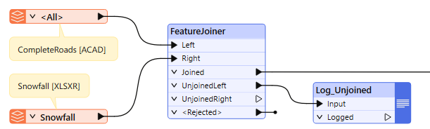
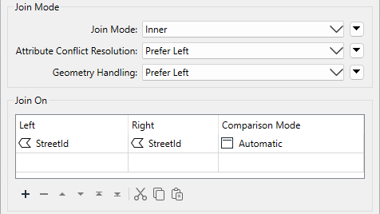
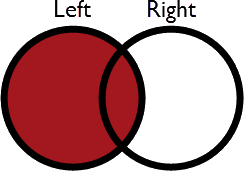
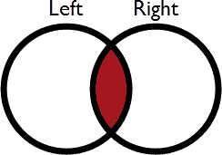
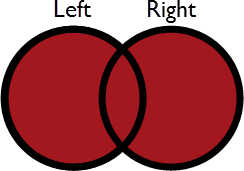
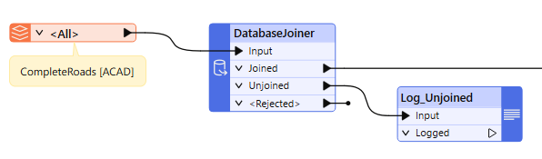
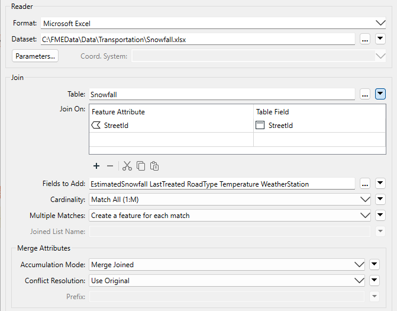
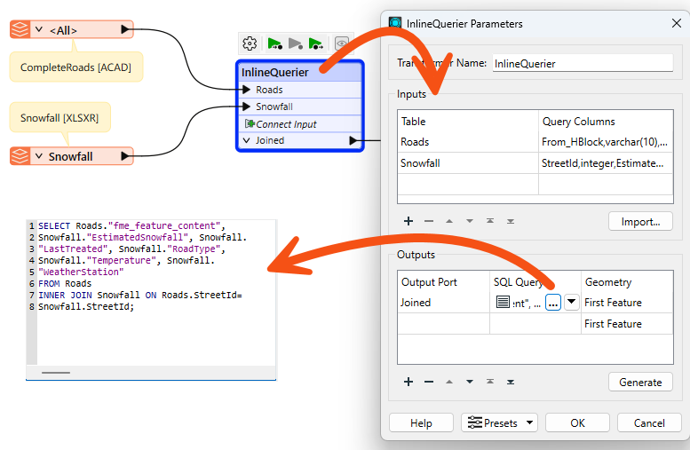

Learning Objectives
After completing this lesson, you’ll be able to:
- Identify when to use the FeatureJoiner transformer.
- Understand the difference between a left, inner, and full SQL-style join.
- Identify when to use the DatabaseJoiner transformer.
- Identify when to use the SQLCreator, SQLExecutor, and InlineQuerier transformers.
Instructions
In this lesson, you will:
- Scroll down to read the text below.
- Optional: You can view the video instead of reading the text. The video covers the text material.
- Complete the Quiz toward the bottom of the page.
- Optional: Let us know if you found this lesson relevant to your role by filling out the survey at the bottom of the page.
- Click 'Next' to mark the lesson complete.
Resources
- Starting workspace
- For Safe Software-hosted training courses, you can find this on your virtual machine here: C:\FMEData\Workspaces\TransformAttributes\choose-a-join-transformer.fmw
- Complete workspace
- C:\FMEData\Workspaces\TransformAttributes\choose-a-join-transformer-complete.fmw
- CompleteRoads.dwg
- C:\FMEData\Data\Transportation\CompleteRoads.dwg
- Snowfall.xlsx
- C:\FMEData\Data\Transportation\Snowfall.xlsx
Introduction
Several transformers can join data by matching attribute values (keys). Some are more oriented towards geometry, while others have a more SQL-like style. Some join data streams within one workspace, while others join one data stream to an external database.
Which you use depends on your join requirements and performance needs.
FeatureJoiner
The FeatureJoiner is a transformer for joining two data streams within a workspace based on a key field match. It is configured using SQL-style joins and can often be more performant than the FeatureMerger.

Here, for example, the author uses the attribute StreetId to join snowfall data to road geometry by using the FeatureJoiner. The parameters for the transformer look like this:

As you can see, this transformer is based on traditional SQL queries. The Join Mode parameter can take one of three values:
| Mode |
Description |
Depiction |
Joined Output |
Unjoined Left |
Unjoined Right |
| Left |
Left records look for a match and are output whether they find a match or not. |
 |
All matches plus unmatched Left records |
None |
Unused Right records |
| Inner |
Left records look for a match and are output if they find one |
 |
All matches only |
Unmatched Left records |
Unused Right records |
| Full |
Both Left and Right records output through the Joined output port, whether they find a join or not. |
 |
All matches plus unmatched Left and Right records |
None |
None |
Other terms you might be familiar with are outer join and right join. An outer join is simply a different name for what the full join does here. To do a right join, you would switch which records are being sent to which input port and use the left join option.
The critical thing to be aware of here is that a record is output for every match. For example, if one Road record matches five Snowfall records, the FeatureJoiner will output five records to the Joined port.
Joined records are always output to the Joined port. Left, Inner, and Full only control which unmatched records are included in the Joined port.
With a left join, the user either believes that all roads will have a matching snowfall record or it does not matter if there is no match. No records will ever appear from the UnjoinedLeft output port.
If it was essential to ensure a match, the chosen mode should be inner. Then, records that exited the UnjoinedLeft output port could be treated as an error and investigated to determine why there was no match.
There are parameters to handle information conflicts and whether to merge attributes only or geometry.
FeatureMerger
Another option for joining records is the FeatureMerger. The FeatureMerger handles joining data differently, only creating a single match per source record by default. The FeatureJoiner tends to be more performant on average, especially for larger data volumes.
To summarize:
- FeatureJoiner
- SQL-style join
- Simple configuration
- Default behavior of multiple matches per source record
- Rejects Null and Missing keys
- FeatureMerger
- Complex configuration
- Default behavior of only one match per source record
- Option to reject Null and Missing keys or not
DatabaseJoiner
The DatabaseJoiner transformer differs from the FeatureJoiner because instead of merging two streams of records, it merges one (or more) stream(s) of data with records from an external database.
Here is the same example as the FeatureMerger above. In this case, the DatabaseJoiner adds snowfall data directly to the road records from a table in an Excel spreadsheet:

The parameters dialog for the DatabaseJoiner looks like this:

Again, StreetID is the shared attribute.
As with the other transformers, parameters control the attributes accumulated and how conflicts are resolved.

The DatabaseJoiner has several advantages. First, it has parameters to control how multiple matches are handled and to optimize the database query.
Secondly, it allows records to be joined without reading the entire dataset into a workspace. FME can query the database and select the individual records it needs. This can improve performance significantly.
It does, of course, require the supplier records to be stored in an appropriate database format!
DatabaseQuerier and InlineQuerier
You can "let the database do the work" and see performance improvements by using transformers that use SQL. Using SQL to control which records the database sends to FME often results in faster workflows.
The DatabaseQuerier transformer combines the functionality of the old SQLExecutor and SQLCreator transformers. This transformer lets you execute SQL or other query language statements against a database, and it includes an optional Inititator port.
The FeatureReader can now execute queries against databases that support SQL/Cypher. Set Define Read Criteria By to Custom Query and enter a query using SQL or Cypher depending on the format. All records will come out of the <Generic> port. Check out the documentation to learn more.
If you want to write an SQL statement to join records you have already read into your workspace, use the InlineQuerier transformer. It accepts records from the workspace and generates a temporary database. With that database, it's possible to apply any SQL commands required – including joins – across several tables:

The InlineQuerier has the distinct advantage of allowing its input to be reused multiple times in a single transformer, whereas multiple joins would otherwise require multiple FeatureJoiner transformers. However, there is a performance overhead involved in generating that initial database.
Look for the AI Assist button when editing SQL queries in FME.
Joining Transformer Flowchart
With all these transformer choices, choosing the right one for the job can be challenging. Thankfully, there is a flowchart to help you decide; check out the Merging or Joining Spreadsheet or Database Data article.
Exercise

Fatima the Business Analyst is building a workspace to join some data. She's still learning the different FME attribute joining transformers, so she develops a few use cases and tries to find the right transformer for each case.
- Start FME Workbench (2026.1 or later).
- Open the starting workspace (C:\FMEData\Workspaces\TransformAttributes\choose-a-join-transformer.fmw).
- Match the transformer to the correct use case.
- Take note of the answers; you'll need them for the quiz.
Leave Us Feedback on This Lesson